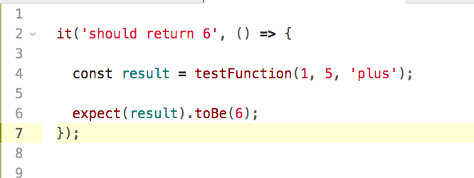
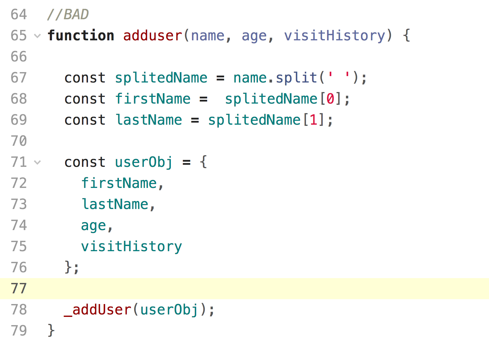

Testing ReactJS Applications
Hack Your Career
 Hack.your.Career
Hack.your.Career
Initiatives
- Mini Konferencje ( 6 kwiecień, rejestracja: http://hackingliwice.pl)
- Staże
- Praktyki wakacyjne, czerwiec 2017 ( CV: team-hack@sap.com )
Agenda
- Testing? Why do we even need this..
- Types of tests
- What can be tested? What should be tested?.. and how to avoid under?
- Few words about testable code
- Our testing stack - Tools
- Live Demo - lets write some tests :)
- What's next?
- Q&A
Testing? Why did we even need this?
Układ kierowniczy
Rurka pitota
What is the reality?

Why developers don't like to write tests?
- A lot of code...
- More time spent on doing tasks
- They consider writting tests as sad obligation instead of an investment
- "But it works... ". Define working!
So why should we?
- Easy refactor and changes
- Less bugs!
- Confidence.. trust :)
- Teaches "proper" way of thinking
- Define working? No problem. Test coverage.
- Be like a pro
HOW !?
You have to like writting tests as much as you like writting code...
But dude, really - how :) ?
Soon we will find out.Types of tests
- Unit
- Integration
- E2E
Unit tests
- Fully automated
- Deterministic
- Independent from each other
- Small, Fast, Readable, Maintainable
- Trustworthy
- Runs in isolation (dependencies are stubbed/mocked)
- Example of tested elements: business logic
Example
Integration test
- Tests communication between components/interfaces
- Its done on production environment
- Within external dependies/resources (calls to DB, file access)
- Small, Fast, Readable, Maintainable
- Trustworthy
- Smoke test is subset
- Example of tested elements: communication with microservice (REST, HTTP)
E2E
What can/should be tested?
A little bit of history...
Business logic layer
View layer (!)
Enzyme vs JEST
Overtesting.. undertesting.. What is less sad?
Both cases cause:
- Less flexibility
- Maintenance problem
- Frustration :)
- My measure of success? Confident refactor.
Testable code
- Keep things small and simple
- Separate business and view logic
- Avoid side effects
- My measure of success? Confident refactor.
Keep things small and simple (SRP)
Bad
Good
Separate business and view logic
Bad
Good
Avoid side effects
Bad
Good
My advice? Pure functions!
Testing stack
- ReactJS
- JEST
- Enzyme
- create-react-app
Live Demo

What's next?
TDD
Summary
- What have we learned today?
- “You don't learn to walk by following rules. You learn by doing, and by falling over.” ― Richard Branson
- Its just the beginning.. You choose which path you follow.